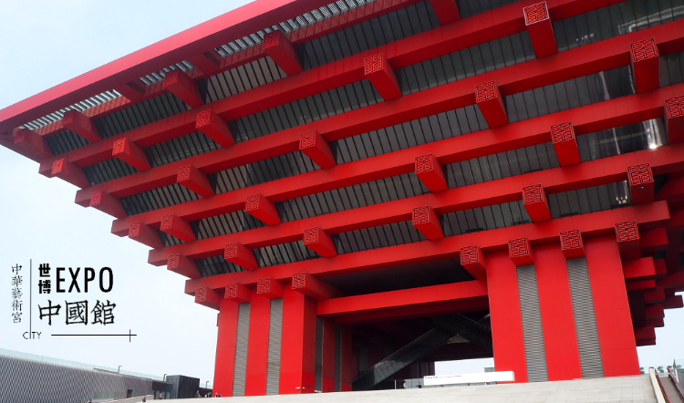
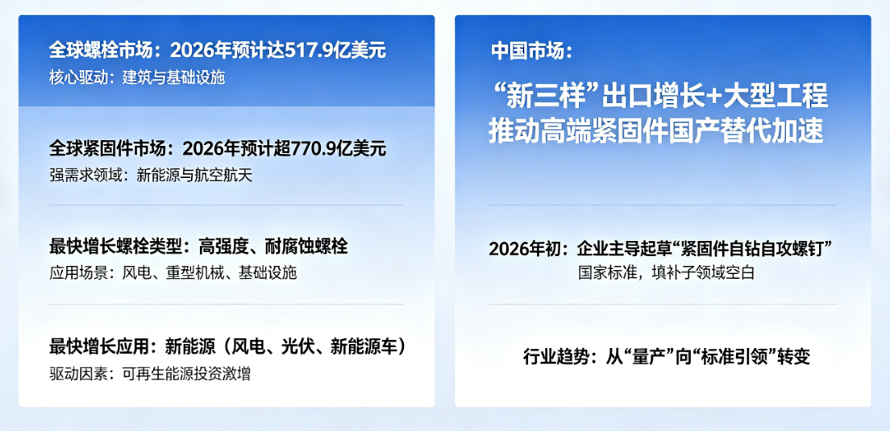
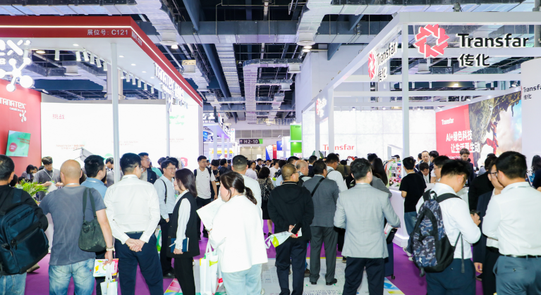
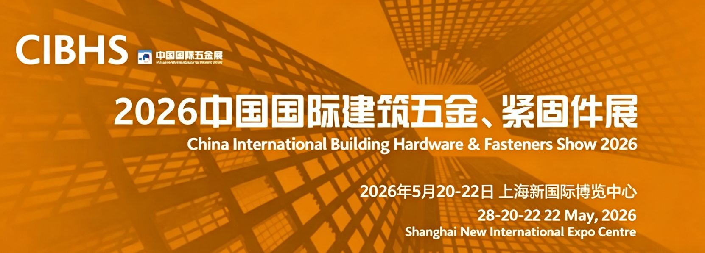

In 2026, the global fastener industry (including bolts) is at a critical stage of steady growth and deep transformation. Driven by continued investment in new energy vehicles, wind power, infrastructure, and other sectors, demand for high-strength, high-precision, and high-weatherability fasteners has increased significantly. Meanwhile, China, as the world's largest producer and consumer of fasteners, has seen its market dynamics and exhibition activities become a focal point for the industry. This article will outline the most important recent market data and upcoming flagship exhibitions to help you seize opportunities.

I. Overview of Global and Chinese Bolt Market Growth
According to the latest industry report data, the global bolt market is expected to reach $51.79 billion in 2026, while the overall fastener market is projected to exceed $77.09 billion. This growth is primarily attributed to increased global construction projects, a rebound in automotive production, and continued investment in the new energy sector. High-strength, corrosion-resistant bolts have emerged as the fastest-growing product segment, mainly used in harsh environments such as wind power, heavy machinery, and cross-sea bridges. By application, new energy (wind power, photovoltaics, new energy vehicles) has surpassed traditional manufacturing to become the primary driver of fastener demand growth.
- Global Bolt Market Projected to reach $51.79 billion in 2026, with construction and infrastructure as core drivers.
- Global Fastener Market Expected to reach $77.09 billion in 2026, with strong demand from new energy and aerospace.
- Fastest-Growing Bolt Type High-strength, corrosion-resistant bolts for wind power, heavy machinery, and infrastructure.
- Fastest-Growing Application New energy (wind power, photovoltaics, NEVs), driven by surging renewable energy investment.
In the Chinese market, as exports of the "New Three" (electric vehicles, lithium batteries, photovoltaics) continue to rise, coupled with the advancement of large-scale domestic bridge, high-speed rail, and offshore wind power projects, the localization substitution of high-end fasteners is accelerating. The transition from "volume production" to "standard leadership" is becoming increasingly evident. In early 2026, a fastener enterprise already took the lead in drafting the national standard for "Self-drilling and self-tapping screws for fasteners," filling a gap in this sub-sector.

II. 2026 Three Major Fastener Exhibition Updates
Exhibitions have always been the best window for the fastener industry to showcase new technologies, connect with new customers, and gain insights into new trends. From spring to early summer of 2026, three specialized exhibitions, each with its own focus, will be held in China, covering the two core manufacturing hubs of South China and East China.
1. 2026 Shenzhen International Fastener Exhibition (Concluded) This exhibition was held from March 31 to April 2 at the Shenzhen World Exhibition & Convention Center (Bao'an), focusing on the South China market and end-user connections. The exhibition deeply integrated with the ITES Shenzhen Industrial Fair, directly connecting with over 2,000 end-user manufacturing enterprises in new energy vehicles, communication electronics, and other fields, providing an efficient platform for fastener companies to enter high-end supply chains.
2. 2026 Shanghai International Fastener Expo (Upcoming) As Asia's flagship exhibition, this year's expo will be held from May 20-22 at the Shanghai World Expo Exhibition & Convention Center. The exhibition will cover 60,000 sqm, host over 1,300 exhibitors, and is expected to attract more than 40,000 professional visitors from home and abroad. The biggest highlight is the debut of the "High-End Fastener Smart Manufacturing Hall" (Hall 3), which breaks away from traditional part-based categorization and instead showcases integrated solutions based on application scenarios such as new energy vehicles, wind power, and aerospace, offering significant practical reference value.
3. 2026 Fastener Expo Shanghai (FES) (Upcoming) This exhibition will be held from June 24-26 at the National Exhibition and Convention Center (Shanghai), focusing on equipment upgrades and procurement. The exhibition will cover 70,000 sqm, with an expected 1,400+ exhibitors. The concurrent "Fastener Equipment Procurement Festival" is a core attraction, offering on-site purchase subsidies. The inaugural event in 2025 achieved a transaction volume of 53 million RMB, providing a valuable discount window for companies planning equipment upgrades.

III. Action Recommendations for Buyers and Practitioners
If you are a buyer or technical manager: It is highly recommended that you prioritize your schedule for May 20-22 and visit the 2026 Shanghai International Fastener Expo at the Shanghai World Expo Exhibition & Convention Center. Focus on evaluating scenario-based solutions in Hall 3 (High-End Fastener Smart Manufacturing Hall), such as anti-loosening bolts for NEV chassis and high-strength bolts for wind power blades, as these directly reflect the current technological ceiling of the industry.
If you have equipment procurement or production line upgrade plans: The Fastener Expo Shanghai (FES) from June 24-26 is not to be missed. Its concurrent "Fastener Equipment Procurement Festival" provides an integrated service of "exhibition viewing, selection, and transaction," and on-site purchase subsidies can effectively reduce capital expenditures. It is recommended to pre-register on the official website and schedule in-depth meetings with target equipment suppliers.
If you aim to enter the new energy supply chain: For both the May and June exhibitions, pay close attention to exhibitors listed with tags such as "new energy vehicles," "wind power," or "photovoltaics." Currently, fastener suppliers with IATF 16949 (automotive quality management) or ISO 9001 certification, capable of providing corrosion resistance and anti-loosening test reports, are the most favored by end users.
IV. Summary of Future Trends
- Smart Manufacturing as a Competitive Barrier: The nation's first intelligent production line for large-diameter, high-strength bolts was launched in Chengdu in April 2026, achieving 100% qualification rate and 50% efficiency improvement. Traditional low-efficiency capacity will accelerate its exit.
- Patent Focus on Anti-Loosening and New Materials: Patents for automotive anti-loosening self-locking bolts and high-strength, high-weatherability bolts are being filed intensively, reflecting downstream demands for higher safety and lower lifecycle costs.
- Standard Leadership Replaces Scale Competition: The authority to draft national standards in sub-sectors is shifting to leading enterprises. Companies with standard-setting influence will gain first-mover advantages in bidding and exports.
- Green and Carbon Neutrality as New Exhibition Themes: The May Shanghai exhibition features a dedicated "Carbon Neutral Solution" display area. Low-carbon processes, recyclable materials, and energy-efficient heat treatment technologies will become implicit procurement thresholds.
In summary, the 2026 fastener market and exhibition dynamics clearly convey a signal: the industry is transitioning from "doing more" to "doing better." Whether you are sourcing high-strength bolts for wind power projects or seeking intelligent production line equipment upgrades, the upcoming Shanghai double exhibitions (May and June) offer invaluable opportunities for centralized inspection and business negotiation. Practitioners are advised to plan their itineraries early and attend with clear technical or procurement goals to efficiently extract value from the information-rich exhibition environment.
For product details or technical support, please visit our or contact our team.
Contact Information
WhatsApp: +8615188853764
Email: yielvin53@gmail.com
Website: wtscrews.com
Brand: WT Fasteners